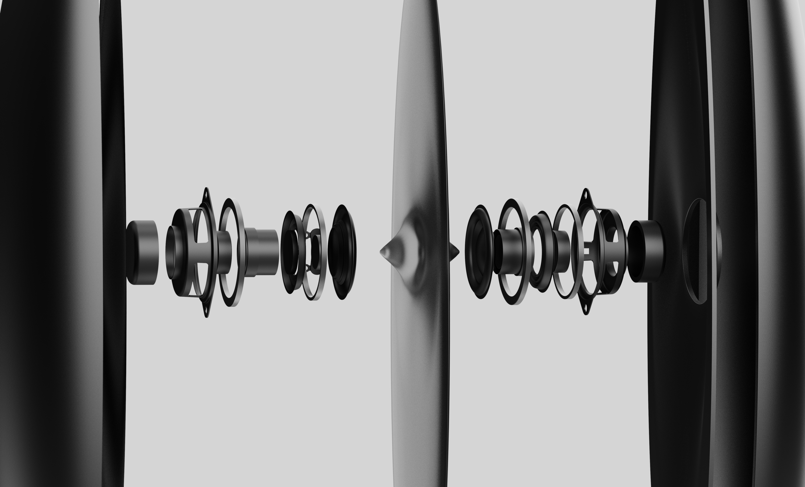
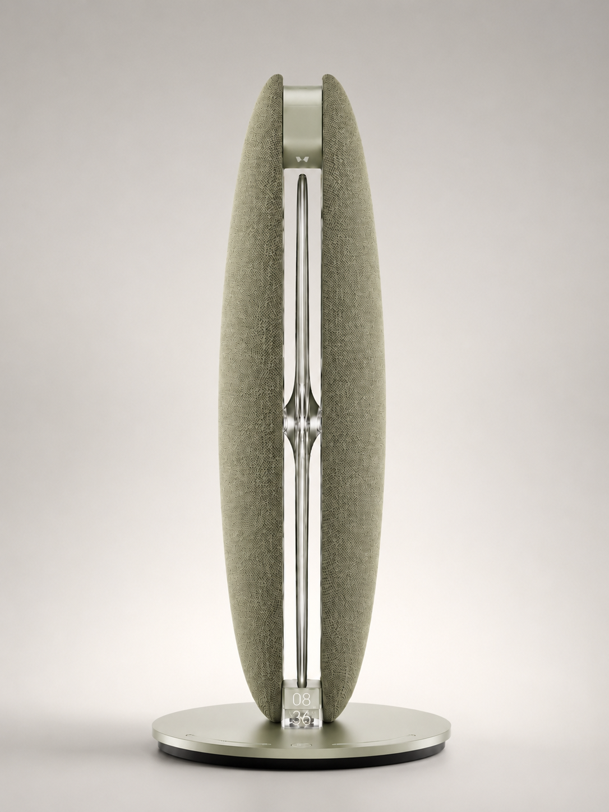
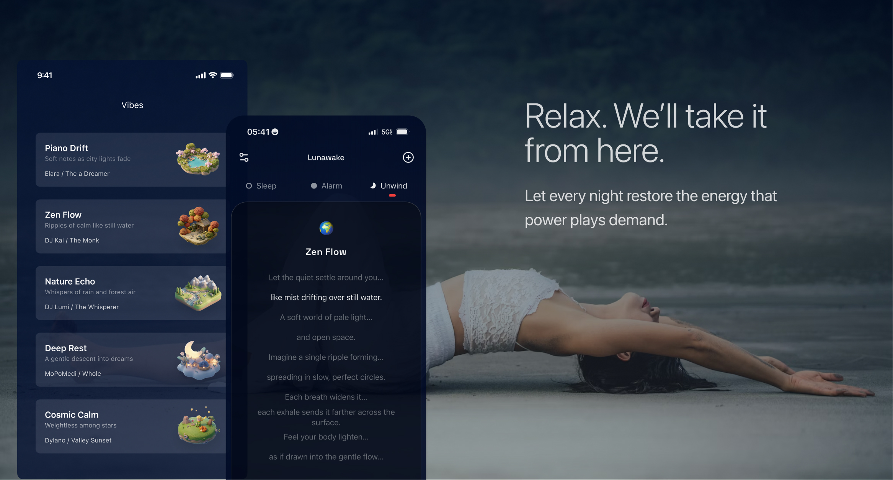
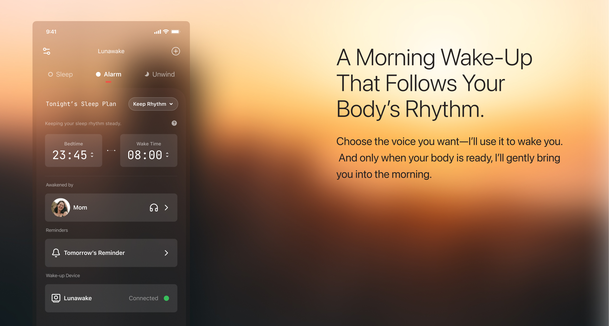
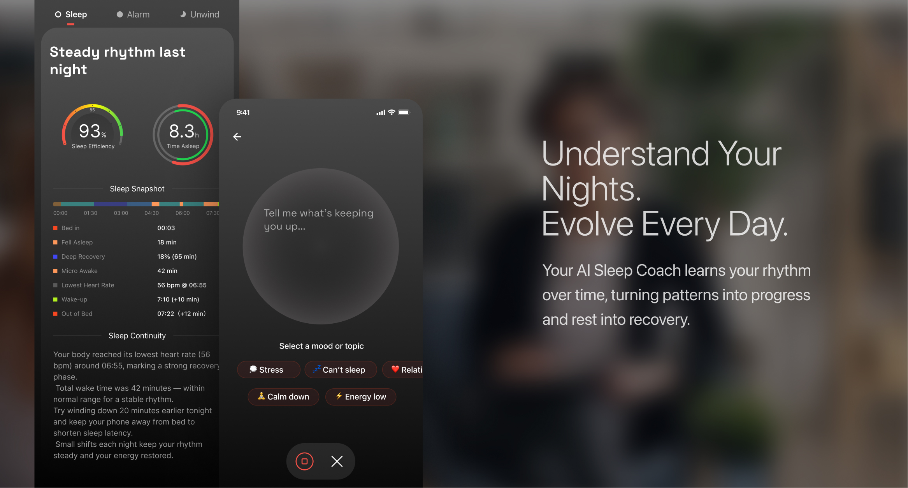
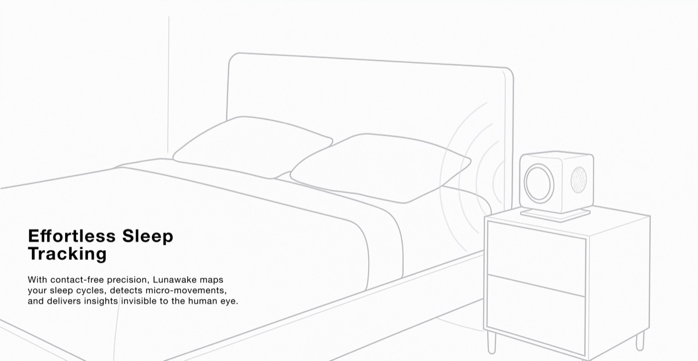

Sense
Bedside sensing reads movement and breathing-related patterns without asking you to wear anything.
Signal, not diagnosisA quieter way to wake
LunaWake is a no-wearable, no-camera sleep companion that senses the night, follows your rhythm, and helps you wake when it matters.
How it works
Every part of LunaWake has a job. It starts with contact-free sensing, turns signals into a night you can understand, then uses that context to shape the wake window.
Bedside sensing reads movement and breathing-related patterns without asking you to wear anything.
Signal, not diagnosisThe Luna App turns nightly signals into a calm, readable picture of how your routine is moving.
Context over scoresLunaWake uses your target time and a hard deadline to create a more considerate wake-up window.
Gentle, then dependable
The support behind the promise
LunaWake uses low-power, contact-free sensing from the bedside. The system is designed to notice patterns across a night — not to make a medical claim about you.
Make it yours
Choose the finish that belongs in your room. Both versions share the same sensing, sound, light, and privacy-first experience.
Olive / ChampagneSoft olive textile with a warm champagne chassis.

Luna App
Set the intention once. Luna gives you the context to make the next night a little more yours — no dashboard anxiety required.

Breathing, sound, and pace — composed into a small routine you can actually keep.

Choose a target and a hard deadline. Luna handles the in-between with care.

See patterns across nights, with language that helps you notice — not judge.
Hardware
LunaWake belongs on the nightstand — close enough to help, quiet enough to forget. Every visible interaction is intentional.

Warm light and sound make the transition into and out of sleep feel gradual.
No camera. A physical privacy switch gives you a clear boundary for voice features.
One glanceable display, simple controls, and a form that feels at home in your room.
Low-friction setup through the Luna App, then a routine that runs in the background.
Sleep Lab
We are building LunaWake in the open: testing sensing, wake experiences, and the language we use to talk about sleep. Clinical validation is in progress.

Q&A
We are early, and we want the product to be clear about what it can do, what it cannot do, and what we are still learning.
Ask to hear from usNo. LunaWake is designed as a bedside system, so there is no ring, watch, or sensor on your body.
No. LunaWake is designed without a camera. Voice features are opt-in and bounded by a physical privacy switch.
No. LunaWake is a consumer sleep companion, not a medical device. It does not diagnose, treat, or prevent any condition. Clinical validation is in progress.
The Luna App is designed to show nightly patterns, routine context, and gentle suggestions in plain language — not a wall of scores.
We are preparing the launch now. Join the launch list for product updates, testing opportunities, and availability news.